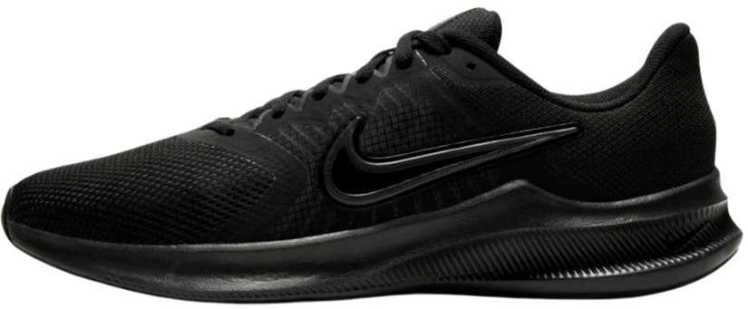

Nike

Tênis Nike
Excelente para corridas
O Nike React Infinity Run 3 oferece uma sensação de maciez e estabilidade com um percurso suave durante as rotas, longas e curtas. A parte de cima ventilada foi feita para parecer contida, mas flexível. Ainda acrescentamos mais amortecimento ao redor do calcanhar e tornozelo para uma sensação de sustentação. Continue correndo, estamos aqui por você.
R$299,90